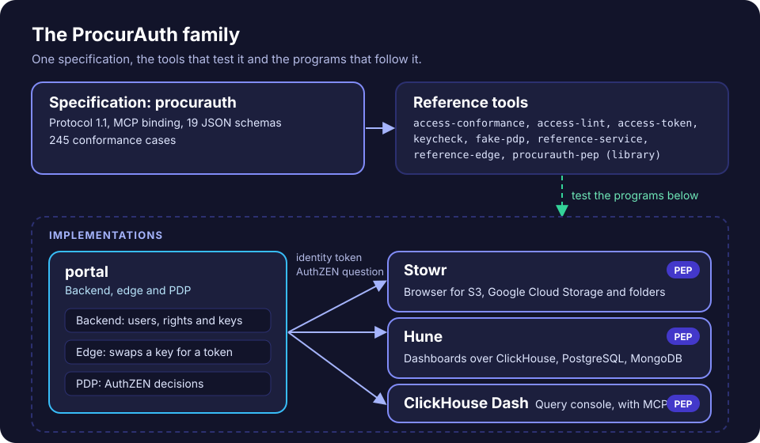

Version 1.1 Programs that follow the protocol
Implementations
A backend, an edge and a decision point, three services, and the reference programs of this repository. Each result below comes from the repository of the program.
The family
The organisation ProcurAuth holds this specification and three programs. The fourth program, ClickHouse Dash, lives in the organisation Circular-fi.

A service does not know the backend. It speaks only AuthZEN. Thus a service works with any PDP that follows the protocol, and the portal is one such PDP.
Programs
| Program | Role | Language | Version | Follows |
|---|---|---|---|---|
| portal · website | Backend, edge and PDP | Rust | 5.6.0 | ProcurAuth 1.1 |
| Stowr · website | PEP: browser for S3 and Google Cloud Storage | Rust | 0.3.0 | ProcurAuth 1.1 |
| Hune | PEP: dashboards | Rust | 0.1.1 | ProcurAuth 1.0 line, commit 058563c |
| ClickHouse Dash | PEP and MCP server: query console for ClickHouse | C++ | 1.6.0 | ProcurAuth 1.1 |
portal Backend, edge, PDP
The portal is one program with one configuration file and one database. It keeps the users, their grants and their keys. It checks a key and gives the service an identity token. It answers the AuthZEN questions of the services, with the limits and the budgets. It also gives the approval inbox of protocol section 17.
- Version
- 5.6.0
- Conformance
- The CI runs the series D (98 cases) and E (20 cases) of ProcurAuth 1.1, at the commit of the tag
v1.1. The portal is not a PEP, so it has no series U result. The scriptdemo/conformance/run-conformance-u.shruns the series U against the demo servicenotes. The portal repository records no count of this run. - Libraries
- None of this repository. The portal has its own decision code.
Stowr PEP
Stowr shows S3 buckets, Google Cloud Storage and mounted folders in one web page. It is one static binary with one configuration file. With the access mode authzen, it checks the identity token and asks a PDP for each operation. Its routes are HTTP routes, and it has no MCP endpoint.
- Version
- 0.3.0
- Conformance
- Series U with ProcurAuth 1.1: 127 cases, 81 passed, 0 failed, 46 skipped. 45 cases need an MCP endpoint, and U84 needs a use of the service itself.
- Libraries
procurauth-pepandprocurauth-core, pinned at the commit of the tagv1.1.
Hune PEP
Hune is a dashboard server. It shows tables, time series and charts from ClickHouse, PostgreSQL and MongoDB. In the access mode authzen, it is a PEP: each dashboard and each query asks the PDP. The mode open needs no PDP.
- Version
- 0.1.1. The first stable version is 1.0.0.
- Conformance
- Series U of 2026-11-11: 110 cases, 60 passed, 0 failed, 50 skipped. Hune has no run with ProcurAuth 1.1 yet.
- Libraries
procurauth-pepandprocurauth-core, pinned at the commit058563c. This commit is 18 commits afterv1.0.
ClickHouse Dash PEP, MCP
ClickHouse Dash is a real-time query console for ClickHouse. It has an MCP endpoint for AI agents. It is a PEP: it checks the identity token or its own MCP keys, and it asks the PDP. It conforms to the MCP binding in the mode identity.
- Version
- 1.6.0
- Conformance
- Series U with ProcurAuth 1.1: 127 cases, 126 passed, 0 failed, 1 skipped. The skipped case U117 needs a tool that asks for input, and Dash has none.
- Libraries
- None of this repository. Dash is a C++ program with its own PEP.
Reference programs
This repository holds four programs that follow the protocol. Each one is the test subject of a series of cases. The tools page describes them.
| Program | Role | Result of scripts/conformance.sh |
|---|---|---|
reference-service | PEP, built on procurauth-pep | Series U: 127 cases, 126 passed, 1 skipped. With a budget on mcp.session, 127 passed. |
reference-edge | Edge | Series E: 20 cases, 20 passed. |
fake-pdp | Test PDP | Series D: 98 cases. As a separate process, 98 passed. In the process of the runner, 97 passed and 1 skipped. |
procurauth-pep | PEP library in Rust | Used by reference-service, Stowr and Hune. |
Read the results
Each project runs access-conformance itself, and it pins one commit of this repository. A new case in a later version can change a result. Thus a result belongs to the pinned commit, not to the program alone.
- The series U tests a PEP. The series D tests a PDP. The series E tests an edge.
- A skipped case is not a failure. The runner skips a case when the target lacks the feature that the case needs, for example an MCP endpoint.
- Section 17 is mandatory for a service. A service that cannot ask for an approval for each of its actions does not conform.
The bench
The conformance bench tests the latest release of each program with the latest runner. A release of a program or of ProcurAuth starts it. The table below shows the last result. The branch conformance-results holds the data.
| Program | Release | Roles | Result | Date |
|---|---|---|---|---|
The results load from the branch conformance-results. | ||||
The file IMPLEMENTATIONS.md repeats this list with the pinned commits.
Add your implementation
Open an issue in the issue tracker. Give the name, the role (PEP, PDP or edge), a link and the result of access-conformance. A maintainer adds the program to the list.